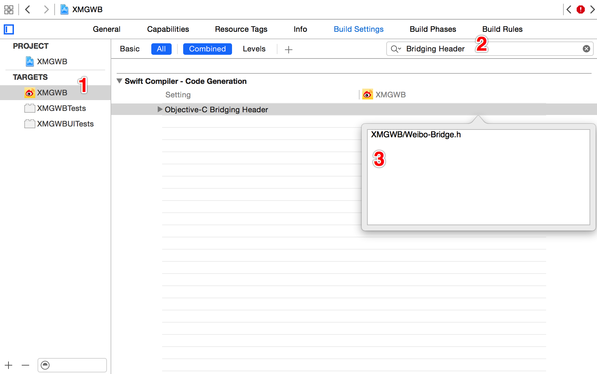

SVProgressHUD 是使用 OC 开发的指示器https://github.com/TransitApp/SVProgressHUD
MBProgressHUD 对比SVProgressHUDARCMBProgressHUDARC & MRC$ cd 进入项目目录Podfile$ vim Podfile
use_frameworks!
platform :ios, '7.0'
pod 'AFNetworking'
pod 'SDWebImage'
pod 'SVProgressHUD'
:wq 保存退出
输入以下命令更新第三方框架
$ pod update
Supporting Files 下添加桥接文件 Weibo-Bridge.h#import <SDWebImage/UIImageView+WebCache.h>
#import <SVProgressHUD/SVProgressHUD.h>
项目 - TARGETS - Build SettingsbridgObjective-C Bridging Header 中输入 大神1期/Weibo-Bridge.h，如下图所示：
import SVProgressHUD
SVProgressHUD.showInfoWithStatus("正在玩命加载中...", maskType: SVProgressHUDMaskType.Gradient)
import SDWebImage
let url = NSURL(string: "http://y3.ifengimg.com/cmpp/2015/07/31/10/3e2bad69-86d4-4855-a776-72e9494c3558_size49_w500_h320.jpg")!
SDWebImageManager.sharedManager().downloadImageWithURL(url, options: SDWebImageOptions.allZeros, progress: nil) { (image, _, _, _, _) in
let data = UIImagePNGRepresentation(image)
data.writeToFile("/Users/LNJ/Desktop/abc.jpg", atomically: true)
}